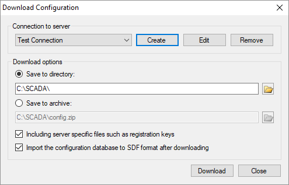
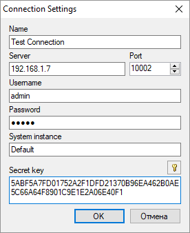
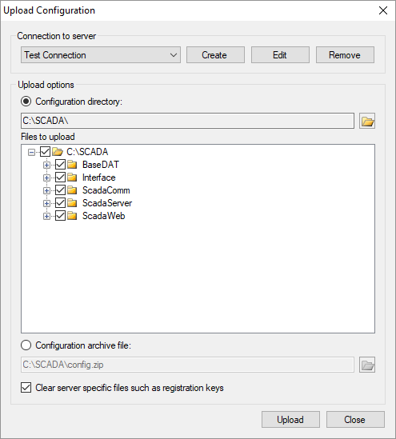
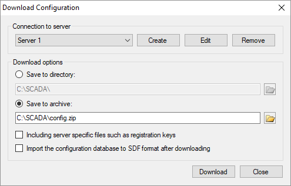

The Agent service is installed on a remote server and provides the exchange of configurations between the server and a workstation of an engineer who is working on a SCADA system project.
Agent works on Windows and Linux operating systems. Agent does not have a user interface and it works as a Windows service or as a Linux daemon. The step-by-step installation manual of Agent is in the distributive package.
To interact with Agent, the Administrator application 5.1.0.0 or higher is needed. Administrator is installed as a part of Rapid SCADA.
Initial condition: there is a remote server with installed Rapid SCADA and Agent, as well as an engineer's workstation which is used for the manipulations described in the article.
It is recommended to store Rapid SCADA configurations (projects) on a file server that is backed up, or use a version control system such as Git. To upload a configuration to a production server, edit the configuration on a workstation and use the Administrator application for transfer.
It is possible that a configuration of Rapid SCADA is stored only on a remote server. In this case, in order to edit the configuration, you have to download it to the workstation first. Before this, open the configuration database file in SDF format using Administrator. The configuration will be imported into this SDF database for editing. Then click the menu item Remote Server > Download configuration... to open the form shown in the figure below.

In the case of subsequent editing of the configuration, you have to set the download parameters exactly as shown in the figure. After the successful download, the form for importing the configuration from the DAT format to the SDF format will open. The cause is that a working copy of the configuration on the server is stored in the specialized DAT format, while the SDF format is used for editing. After successful import, edit the Rapid SCADA configuration database and settings of the all applications on the workstation.
Before the first using of the download and upload feature, create a connection to the server as shown in the following figure. The user name and password are verified by the Agent according to the configuration database deployed on the remote server. The specified user must have the Administrator role. The System instance and Secret key fields must match the corresponding Agent settings.

After the configuration editing is completed, upload it back to the remote server. To do this, choose the menu item Remote Server > Upload configuration... The following form appears:

First, tick the root node of the tree to select all the configuration files for uploading, and then expand each node in the tree to check the selected files and exclude redundant files if they are present. After successful uploading the configuration, the Agent restarts the Server and Communicator services on the remote server to apply the changes. Test the server is up after the configuration is uploaded.
This scenario is possible if there are test and production servers or main and standby servers. Consider the transfer of the configuration from the server 1 to the server 2.
Open the downloading dialog and set the download options as shown in the figure. The difference is that the configuration is saved into the archive, the server-specific files are not downloaded, and the configuration database import is not executed. After the download is complete, it is a good idea to open the saved archive file and check the configuration files it contains.

Then, open the upload dialog and create a connection to the server 2. Select the previously saved configuration archive file as the source and untick the checkbox of clearing server-specific files. After uploading the configuration, verify that the server 2 works well.
Check the server status with help of the form which is called from the menu Remote Server > Server Status... Select the connection to the server and click the Connect button. In case of the error status of the Server or Communicator service, connect to the file system of the remote server and analyze the Rapid SCADA application logs. In addition, this form allows to remotely restart the the Server and Communicator services.